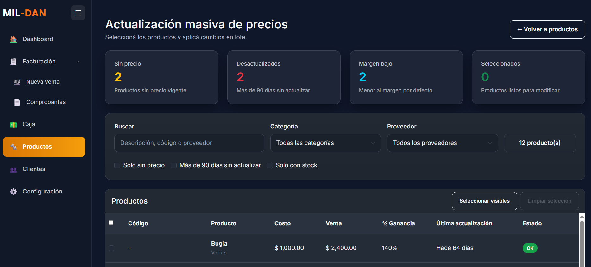
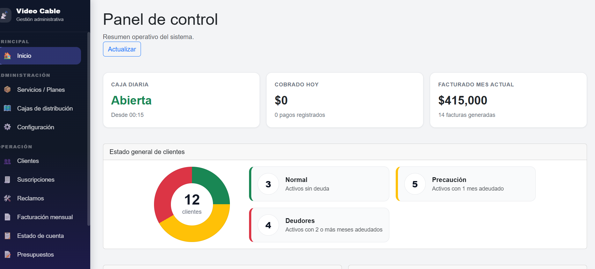
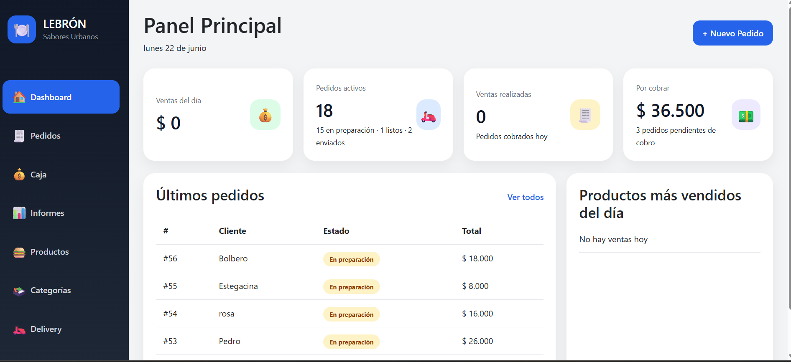
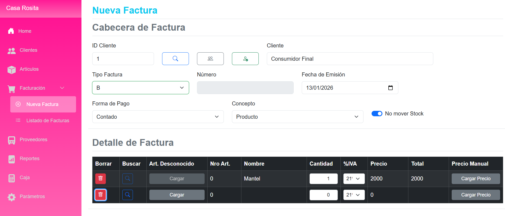
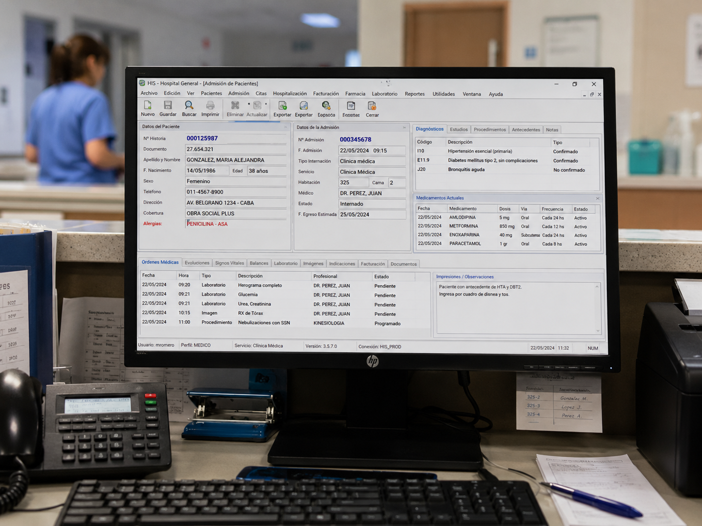
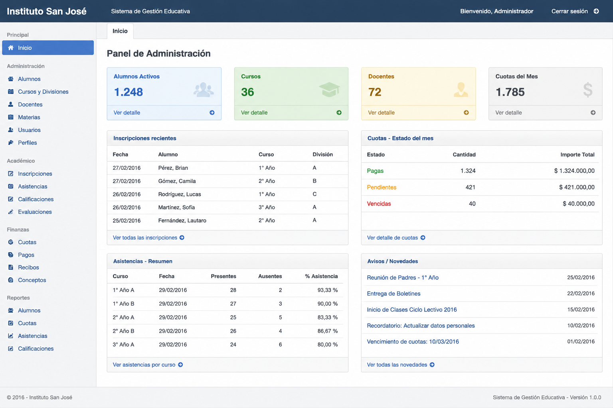
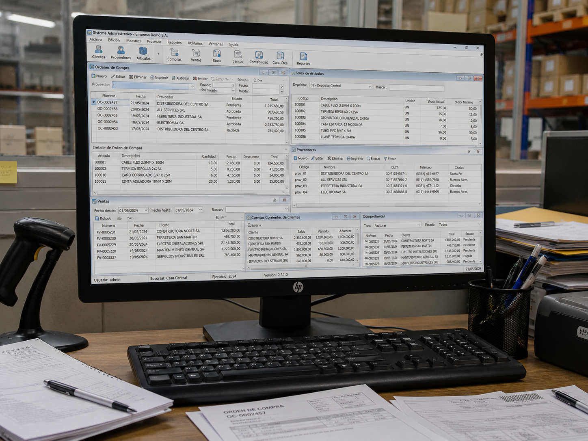

Información desordenada
Datos repartidos en planillas, cuadernos y conversaciones.
SOFTWARE A MEDIDA PARA NEGOCIOS
Desarrollo soluciones simples, mantenibles y adaptadas a la forma de trabajo de cada negocio: clientes, pagos, deuda, stock, turnos, reclamos, reportes y más.
Pensado para pequeñas y medianas empresas.

EL PUNTO DE PARTIDA
Cuando la información se dispersa, trabajar cuesta más de lo necesario.
Datos repartidos en planillas, cuadernos y conversaciones.
Vencimientos y saldos sin una visión clara.
Consultas que se pierden y respuestas que se demoran.
Stock o servicios sin registro de su recorrido.
Horas de trabajo para obtener información básica.
Herramientas antiguas que frenan nuevas necesidades.
LO QUE HAGO
Soluciones enfocadas en resolver la operación diaria y dar información útil.
Aplicaciones para administrar clientes, ventas, pagos, stock, servicios y reportes.
Modernización de WinForms, WPF, Excel o herramientas internas hacia soluciones web.
Correcciones, mejoras, backups, ajustes y acompañamiento continuo.
Reportes, alertas, integraciones y reducción de tareas manuales.
Indicadores claros para tomar mejores decisiones.
WhatsApp, email, mapas, APIs, facturación electrónica u otros servicios según necesidad.
CASOS DE USO
Ejemplos de sistemas pensados para rubros con operaciones concretas.

RPMGestión de productos, stock, ventas, clientes, proveedores y reportes para comercios de repuestos.

NETGestión de abonados, planes, cajas, suscripciones, deuda, pagos parciales, caja diaria y reportes.

GOAdministración de pedidos, estados, clientes, repartidores, pagos y seguimiento operativo.

TXTGestión de productos, pedidos, clientes, movimientos de stock y seguimiento de la operación diaria.
RESPALDO PROFESIONAL
Además de proyectos propios y soluciones a medida, cuento con experiencia profesional participando en el desarrollo y mantenimiento de sistemas internos para organizaciones de distintos rubros.

Módulos de farmacia, internación, enfermería, reportes, admisión, procedimientos almacenados, WPF, WCF, SQL Server y Crystal Reports.

Experiencia laboral en soluciones para la gestión de alumnos, cursos, cuotas, inscripciones, asistencias y procesos administrativos.

Participación en soluciones de gestión de clientes, seguimiento comercial y procesos internos.
Parte de esta experiencia corresponde a trabajos realizados en relación de dependencia y se presenta como respaldo técnico-profesional.
MODELO DE TRABAJO
El objetivo es que el sistema evolucione con tu negocio. Por eso trabajo con un modelo mensual que puede incluir uso del sistema, soporte, mantenimiento y mejoras acordadas.
Cada propuesta se define según el tamaño del sistema, cantidad de usuarios, módulos necesarios y nivel de soporte requerido.
PASO A PASO
Entiendo cómo trabaja el negocio y qué problema necesita resolver.
Defino módulos, alcance inicial y modalidad de trabajo.
Desarrollo una versión usable con las funciones principales.
Agregamos ajustes, reportes y mejoras según el uso real.
BASE TÉCNICA
La tecnología se elige según la necesidad del proyecto, priorizando estabilidad, mantenimiento y facilidad de uso.
CONTACTO
Si tenés un negocio y necesitás ordenar clientes, pagos, stock, reclamos o procesos internos, puedo ayudarte a pensar una solución simple y escalable.